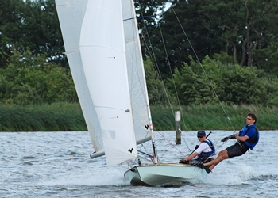
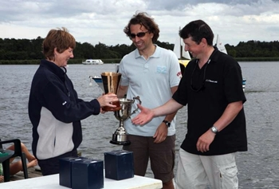
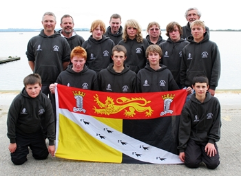
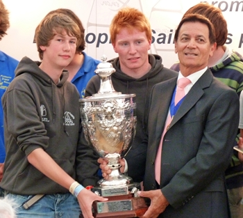
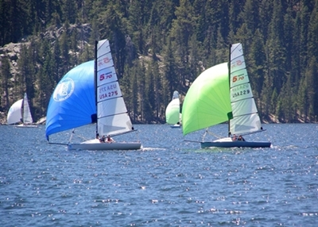
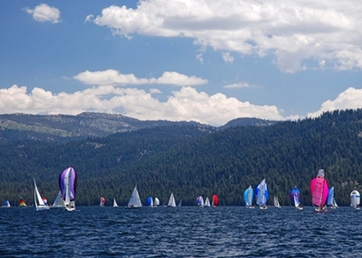
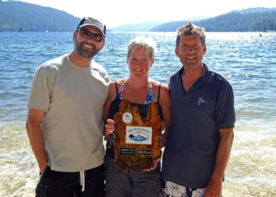

Off The Broad 2010
Norfolk Punt Championships
Barton Broad 21/22 August 2010
Peter Bainbridge (OOD)

There have been Norfolk Punts racing on Barton Broad for over 75 years and the Championships held last weekend was the usual mixture of old, new, hi-tech and traditional.
The racing on Saturday was held in testing conditions, gusting 20kts, with the brothers Jarvey (Harnser), Friend (Blackbird) and Daniels (Swallow II) filling the first three places of the three races after some close finishes. Alastair Drew (Grayling) and Mike Griffin (White Eagle) both had damage to their masts as the wind increased during the day and HBSC CommodoreTerry Vincent (Rainbow Trout) still managed to finish 6th in the last race despite sailing with a large tear in his mainsail.
Sunday brought a respite in the wind which allowed some fledgling swallows nesting on the Punt Club starting hut to try their first flights. On the water, in the lighter conditions, Jane Pye moved up the fleet, despite falling out of Wild Goose on a reach, and Richard Whitefoot in his new punt Comet showed good speed.
Swallow II and Robin Slatter in Cavender were closely matched to win the Broadshaven Trophy for traditional punts and the overall championships would be decided between Harnser and Blackbird on the last race. Andrew and Robert Friend had shown great skill in sailing Cormorant downwind with her large asymmetric spinnaker but in the deciding race James and Paul Jarvey played the windshifts cleverly to win the Championships.

Norfolk Punt Championship Results:
1st - James and Paul Jarvey (HBSC)
2nd - Andrew and Robert Friend (NPC)
3rd - William and Robert Daniels (NPC)
4th - Robin Slatter & Lesley Haines (HBSC).

NSSA Norfolk Youth Team Success
Young Sailors have Winning Time at NSSA Nationals at Datchet Water.

Nine intrepid sailors, supported by local sponsor Boats 'n' Bits, represented Norfolk at the week-long National Youth Regatta - one of Europe's largest Youth Sailing competitions. Sailed at Datchet Water, against the fantastic backdrop of Windsor Castle, the Norfolk Team, despite being one of the smallest contingents amongst nearly 300 competitors at the event, punched above their weight to secure top 5 results overall in 3 of the 6 fleets, win the prestigious Mount Haes competition and be placed fourth County overall.
Peter Cullum, for whom this was his first experience outside of club racing, secured second place in the Rookie Fleet, missing first place by one second, following a dead-heat tie on handicap in the last race which split a crucial point. Peter's performance in his trusty Topper did however secure him the Norfolk Trophy, a beautiful wooden half model of a yacht, for best performance by a Norfolk Sailor, following 4 first and 3 second places across the 12 races sailed.
Toby Percival, last years winner of the Rookie fleet and previous holder of the Norfolk Trophy took third place in the slow handicap fleet in his RS Tera Pro. Michael Cullum took 5th place overall in the Laser Standard Fleet, following four days of intense competition in conditions that varied from F5 to light airs and a smattering of torrential rain.
Team mates Chris Barker, Peter Carter, James Denley, Dale Lawson, Freya Newton and James Thompson all produced strong consistent results, which included firsts and top ten positions at various stages of the competition to deliver Norfolk a highly respectable 4th place in the County of County's overall result; this years winners being Kent.
It was however the teams choice of Dale Lawson and James Thompson to represent Norfolk in the Mount Haes competition - one of the most prestigious events in Youth Sailing - that was to provide thrills and spills at the premier event sailed mid-week to form a rest from the main fleet programme.
A gusty, shifty F4 and sunshine created a spectator feast as the Mount Haes race was sailed close to the shore on a windward leeward course. 36 crews, each representing their counties, sailed identical Topper Xenons in six heats, with the first two finishers going through to a semi final, where the top three finishers would produce the final fleet.
Lawson and Thompson produced an epic journey to the final, which had the Norfolk Team biting their nails and horse with shouts of encouragement!
In heat 1, a commanding lead was brought to an abrupt end 200 yards from the finish as Lawson and Thompson capsized under the Xenon's powerful Asymmetric Spinnaker, two boats caught and passed them. Undeterred, Norfolk's very own dynamic duo executed a rapid textbook recovery and relaunched the kite to chase the pack down. Noticing that the second finisher had not cleared the gate, a third place suddenly became a place in the semi final.
The semi-final produced a competitive start line, with a boat luffing Norfolk without giving room to keep clear; boats touched and Lawson played it safe by rapidly executing a 720o penalty turn. The on-the-water judge spotted the real offender and promptly flagged him. Despite the unnecessary 720, Norfolk was now back of the fleet. Bit by bit Lawson and Thompson fought their way up the beat and produced some outstanding Spinnaker work to eventually fight their way into third place at the gun and take a place in the final.
Clearly deciding that there had been enough excitement for the day, nothing was left to chance in the final as Norfolk were second over the start line and first to the windward mark. By the third and final lap Lawson and Thompson rounded the windward mark with a thirteen second lead, which just grew and grew as they stormed over the finishing line under full kite and secured the Mount Haes trophy from previous holders Lancashire, plus £600 worth of Rockley Watersports vouchers.

The Mount Haes competition, first sailed in 1962, following its inception and sponsorship by Captain Mount Haes RN, has been won by Norfolk on only four previous occasions; 1966, 1967, 1970 and lastly in 1998 by Nick Smith and Keith Philips.
The Mount Haes result brought much attention to Norfolk off the water, with an impromptu game of flag raiding, resulting in Norfolk's flag being re-positioned atop a 50ft tree by the Cambridge Team. The Norfolk Team proved there off the water performance to be commensurate with on the water and was complimented at the Team Manager's meeting for being the most effective at flag recovery!
At the prize-giving, the Norfolk Team were also delighted to learn that Heather Newton, a committed and popular volunteer at the Norfolk School Sailing Association base at Filby and elder sister of team member Freya, was one of eight lucky youngsters to have been awarded the National School Sailing Association's presidents award for exceptional contribution to youth sailing. Heathers reward will be a week-long sailing experience on the classic yacht Sceptre, Britain's 1958 challenger to the America's Cup.
Next years National Youth Regatta will be sailed at Grafham Water (Cambridgeshire) and in 2012 will be sailed at Weymouth, utilising the Olympic Sailing Venue - the very last event to do so prior to the start of the 2012 Olympics.
Tim Percival on behalf of NSSA Filby.
High Sierra Regatta
Simon and Rachel Clayton Compete Far Away from Home
Four years after their winning performance in a Viper 640 sportboat at the 2006 High Sierra Regatta on Huntington Lake in California, HBSC members Simon and Rachel Clayton returned over the weekend of July 17/18 for another crack at this fabulous regatta set 7,200' (2,200m) up in the Sierra Nevada mountain range. Once again they teamed up with Rachel's brother, an unofficial honorary HBSC member with dispensation to represent HBSC at events in California. This year they were sailing one of the fastest-growing classes in the US - the Finot-designed, Open 5.70 sportboat.
With 114 entries this event was certain to be exciting, and with blazing sunshine, temperatures in the high 20s, breezes from 5 to 15 knots and a stunning setting of shimmering alpine lake and pine-clad mountains, it proved to be the highlight of the year for all concerned. Although none of the three HBSC members had ever sailed the Open 5.70 before they soon came to grips with most of its idiosyncrasies, and while they were unable to reel in the class champion, their experience gained sailing in the fluky winds of HBSC and the Broads allowed them to keep the manufacturer's team boat and the rest of the fleet behind them, posting good enough results to finish the regatta 2nd in their class.
Honorary HBSC member, Nick Mockridge, will continue to represent the club at this event annually, and Simon and Rachel will no doubt return in due course to ensure that HBSC is successfully represented, not merely represented!
Submitted by Nick Mockridge (Santa Barbara SC/Hickling Broad SC)


